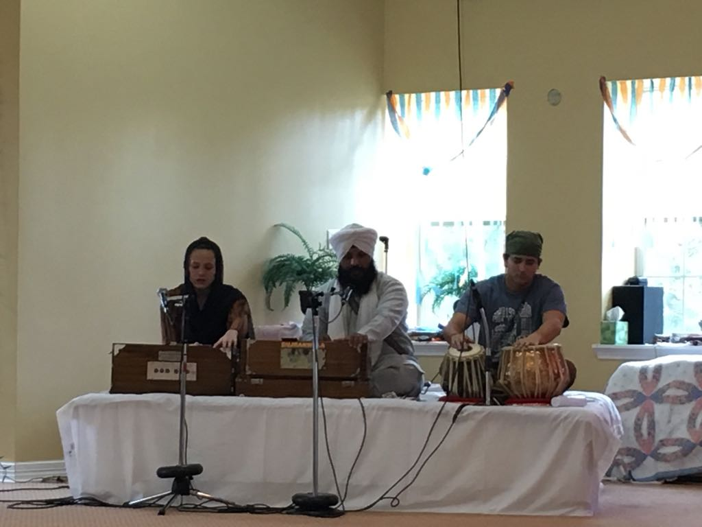
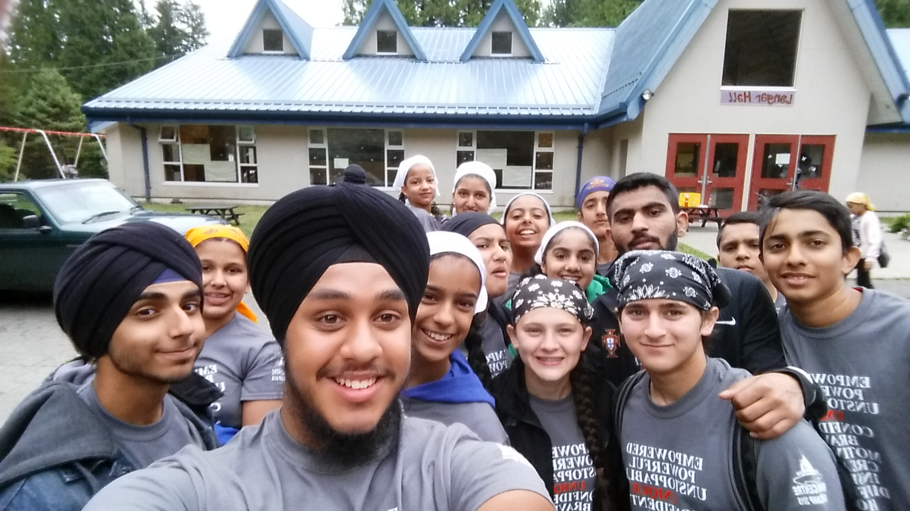

Service and Community Involvement


I follow the Sikh faith, and have attended our Gurdwara (church) practically every Sunday since I was born. At the Gurdwara I perform tasks from lunch preparation, to leading the congregation in religious hymns, to teaching in the children’s program, to lawn maintenance. In my free summers and winters, I have also volunteered as a Camp Counselor at a Sikh camp in Mission, British Columbia, Canada. At camp I assist campers with overcoming their fears on our High Ropes Challenge Course. Using my engineering knowledge, I provide technology support for workshops and classes. In the Gurdwara, I further campers’ and my own spiritual connection to God through one-on-one counseling and class facilitation.
I help distribute food to the homeless throughout the school year, at Mobile Loaves and Fishes in Austin, TX and, with Fed With Faith in LaGrange, KY over winter break in addition to the Sunday lunches at my Gurdwara. On holidays, we hold fundraisers to purchase presents and other items for the homeless. I volunteer at our local senior center to offer entertainment from: facilitating games like bingo and cards to playing my guitar and singing.
The picture on the far right is me playing the tabla at my local gurdwara in Austin, Texas. The picture to the left is from a summer camp at Khalsa Center Miracle Valley.